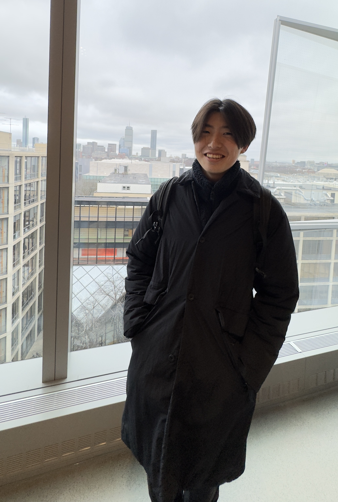

"Physics is surreal"
I am an undergrad physics student at University of New Hampshire.
I have been trying to specialize in Condensed Matter Theory, but genuinley interested in any field of theoritical physics, experimental physics, computational physics,
mathematical physics, biophysics, information theory, etc.
I am going to apply PhD this winter, and have been looking for the best fit for my career as a future physicist.
My hometown is Tokyo, Japan. So my first language is Japanese.
I love physics. I especially love to talk about physics with anyone in the world.
